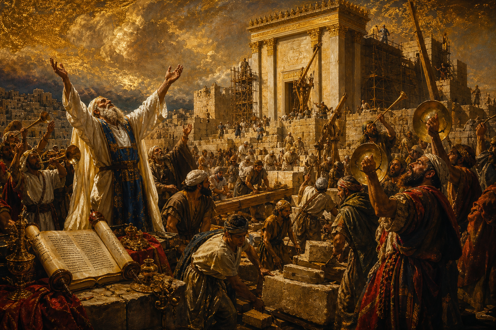

Old Testament · Book 15 of 39
Ezra
A remnant returns from exile to rebuild the temple of a God who never abandoned them, and a priest-scribe leads them back to his law with tears and resolve.
Ezra opens where 2 Chronicles ends: a pagan king, moved by the same Living God who had promised it through the prophets, sends his people home to rebuild. It is the story of a remnant learning, after seventy years in a foreign land, what it costs and what it means to belong again to the LORD.
For Ezra had prepared his heart to seek the law of the LORD, and to do it, and to teach in Israel statutes and judgments.
What happens in Ezra
The book begins with King Cyrus of Persia issuing a decree, stirred up by the LORD himself, allowing the Jewish exiles to return to Jerusalem and rebuild the temple that Nebuchadnezzar had destroyed. Nearly fifty thousand return under the leadership of Zerubbabel, and they begin by restoring the altar and laying the temple's foundation amid both great joy and great weeping from those old enough to remember Solomon's original temple in its glory. Local opposition and political schemes bring the work to a halt for years, until the prophets Haggai and Zechariah stir the people to resume, and the temple is finally completed and dedicated with celebration. Decades later, Ezra himself — a priest and scribe devoted to the law of Moses — leads a second group back to Jerusalem, carrying the king's blessing and a renewed commitment to teach God's statutes. On arriving, Ezra discovers that many in the community, including leaders, have intermarried with surrounding peoples in violation of God's covenant, threatening to unravel the very holiness the exile was meant to restore. Ezra's grief is immediate and physical: he tears his clothes, pulls at his own hair, and falls before God in a prayer of confession so raw it becomes a model of corporate repentance, and the book closes with the community painfully but earnestly setting things right.
Why it matters
Ezra was written to show a fragile, rebuilding people that their God had not forgotten his promises even after judgment and exile, and that coming home to him meant more than crossing a border — it meant returning the heart as well. The temple rising again from rubble is a visible sign of a Living God who restores what sin has broken, while Ezra's own example, a man who set his whole heart to seek the law of the LORD and to do it and to teach it, models the kind of wholehearted devotion that makes restoration real rather than merely formal. Even the hard chapters on intermarriage are ultimately about guarding the relationship between a Father and the covenant family he longs to walk closely with, not about exclusion for its own sake, and they call every generation back to the same searching question: will we return to him with our whole heart, not only our address?